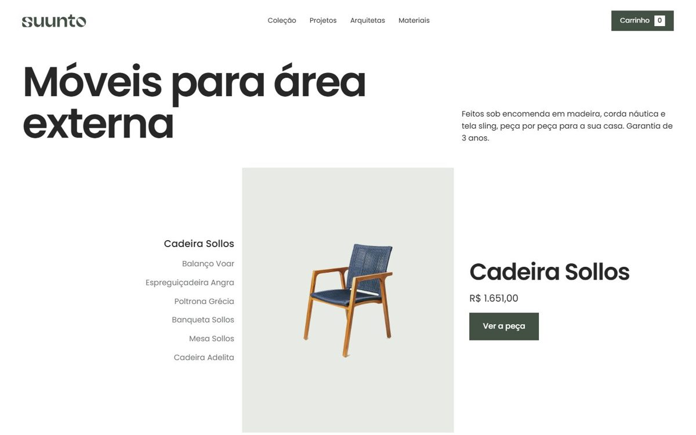
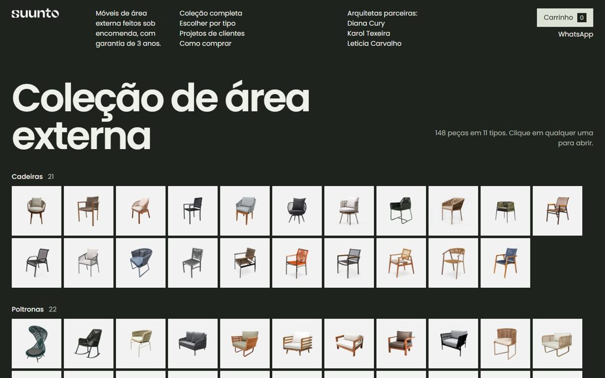
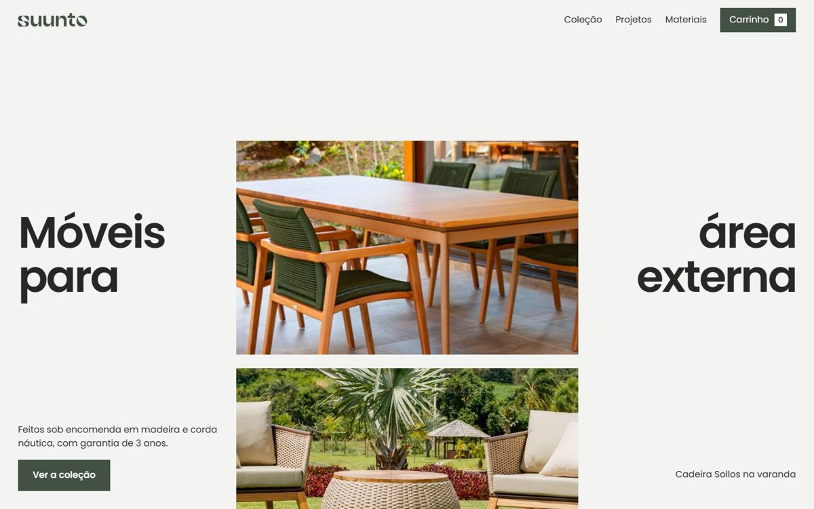

Três caminhos para o novo site
Mesma marca, mesmas fotos e o mesmo catálogo nas três. Muda a forma de mostrar a coleção. Todas têm carrinho e fecham o pedido pelo WhatsApp.

Catálogo
Cada peça num quadro de cor, como num catálogo impresso. Na abertura você escolhe a peça pelo nome e vê o preço.
Abrir a versão
Coleção
Fundo escuro e a coleção inteira à mostra logo na abertura. Os nomes acendem a foto da peça ao passar o mouse.
Abrir a versão
Ambientes
O nome fica parado e as fotos dos ambientes passam por dentro dele. Foco nos lugares onde os móveis vivem.
Abrir a versão